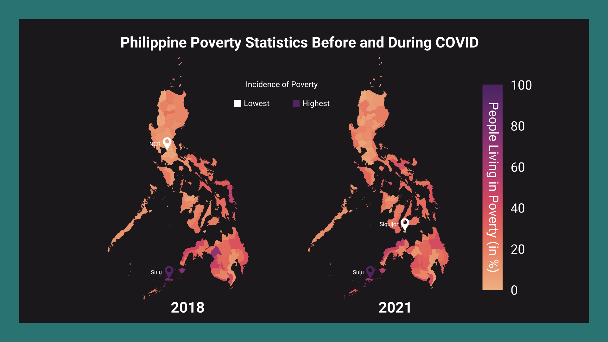
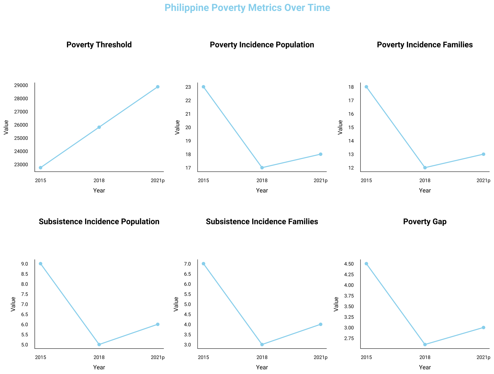
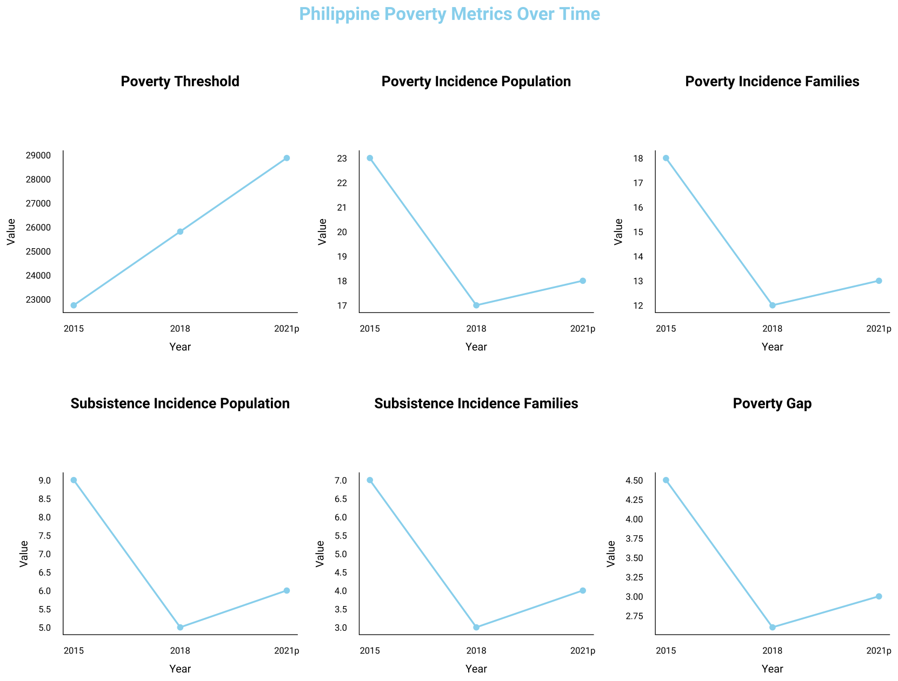

PAN DE MIC: PHILIPPINE POVERTY THRESHOLD AND INCIDENCE BEFORE AND DURING PANDEMIC

Hi. We are
CS
.
And this is our project, Poverty Threshold and Incidence . In March 2020, in response to the COVID-19 pandemic, the Philippine government implemented lockdowns with varying stringency across the country, lasting for more than 17 months, making it one of the longest lockdowns worldwide. These measures limited people's movement and affected many livelihoods. The year 2020 marked the country's deepest recession in post-war history. However, it is worth noting that the inflation rate during that time remained stable. Other factors affecting poverty such as employment, the state of the agriculture sector, and population growth, were also affected by the pandemic. This raises the question: how has the COVID-19 pandemic affected poverty in the Philippines? We aim to delve deeper into this issue and determine the pandemic's impact on each province in the country.
And this is our project, Poverty Threshold and Incidence . In March 2020, in response to the COVID-19 pandemic, the Philippine government implemented lockdowns with varying stringency across the country, lasting for more than 17 months, making it one of the longest lockdowns worldwide. These measures limited people's movement and affected many livelihoods. The year 2020 marked the country's deepest recession in post-war history. However, it is worth noting that the inflation rate during that time remained stable. Other factors affecting poverty such as employment, the state of the agriculture sector, and population growth, were also affected by the pandemic. This raises the question: how has the COVID-19 pandemic affected poverty in the Philippines? We aim to delve deeper into this issue and determine the pandemic's impact on each province in the country.
REFERENCES
1. Chiu, P. D. M. (2021). Why the Philippines' long lockdowns couldn't contain covid-19. BMJ, n2063.↩
2. Debuque-Gonzales, M. (2021). Navigating the COVID-19 Storm: Impact of the pandemic on the Philippine economy and macro responses of government. In Philippine Institute for Development Studies (DP 2021-39). Retrieved April 18, 2024↩
1. Chiu, P. D. M. (2021). Why the Philippines' long lockdowns couldn't contain covid-19. BMJ, n2063.↩
2. Debuque-Gonzales, M. (2021). Navigating the COVID-19 Storm: Impact of the pandemic on the Philippine economy and macro responses of government. In Philippine Institute for Development Studies (DP 2021-39). Retrieved April 18, 2024↩


 
